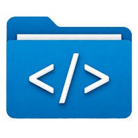

PinSnippet is a lightweight plugin for OpenIDE that simplifies code management. Save code snippets locally, insert them via code completion, and organize them in folders. All data is stored in a JSON file on your device, with no metrics collection or registration required.
Choose the version compatible with your IDE:
[Add screenshots of PinSnippet interface, e.g., Tools > Manage Snippets or code completion]